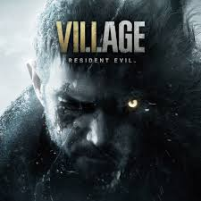
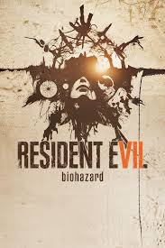

Mi Top 5 de Mejores Juegos
Esto es un ranking personal de juegos a los que he jugado en mi vida.
1. Resident Evil 8: Village

Una obra maestra del terror que perfecciona la fórmula de la supervivencia en primera persona. Nos lleva a una aldea maldita en Europa del Este, llena de hombres lobo, vampiros y criaturas de pesadilla gótica, donde la tensión y la acción se mezclan de forma increíble.
2. Red Dead Redemption 2
.jpg)
Un viaje épico y emocional por el salvaje oeste. Acompaña a Arthur Morgan y la banda de Van der Linde en un mundo abierto increíblemente realista, detallado y vivo. Destaca por tener una de las historias más profundas y memorables jamás contadas en los videojuegos.
3. Silent Hill 2
.jpg)
El gran clásico del terror psicológico. La historia sigue a James Sunderland, quien viaja al brumoso y espeluznante pueblo de Silent Hill tras recibir una carta de su esposa fallecida. Un juego que no busca asustarte con monstruos rápidos, sino que se mete en tu mente con su atmósfera opresiva y su profunda narrativa.
4. Resident Evil 7: Biohazard

El juego que salvó a la franquicia volviendo a sus verdaderas raíces de terror. Con su innovador cambio a la primera persona, nos encierra en la asfixiante granja de la familia Baker en Luisiana, haciéndonos sentir vulnerables y obligándonos a medir cada bala y cada paso.
5. Grand Theft Auto: San Andreas
.jpg)
Una leyenda de los mundos abiertos que marcó a toda una generación. Sigue la historia de CJ en su regreso a Los Santos, enfrentándose a bandas rivales y policías corruptos. Un mapa inmenso, muchísima libertad y una banda sonora inolvidable lo convierten en un clásico eterno.